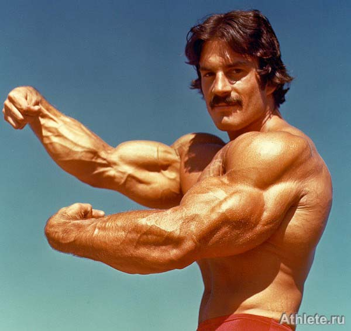

Testépités
A testépítés célja, hogy különféle gyakorlatok, főképp súlyzós edzés segítségével növelje az izomzatot, valamint hogy népszerűsítse az egészséges életmódot és a fitneszt. Versenysportként a testépítés az izomtömeg definiáltságát, szimmetriáját, esztétikáját
hivatott bemutatni művészi módon. Az edzésekhez többek között kézisúlyzókat, súlytárcsákat, különféle rudakat (francia rúd, kétkezes súlyzórúd) és egyéb ellenállásos eszközöket, gépeket használnak. A testépítésben is fontos szerepet kap az étrend,
a regenerálódásra szánt pihenőidő, a gyakorlatok szabályos végzése, valamint a kiegészítő mozgásformák, mint az aerob edzés. A legtöbb testépítő táplálékkiegészítőket is fogyaszt, például fehérjeport. A testépítők egy része használ anabolikus szteroidokat
az izomépítés és a teljesítmény fokozásához, aminek azonban egészségkárosító mellékhatásai lehetnek. Az izomnövekedés eléréséhez fontos tényező a megfelelő hosszúságú és minőségű pihenés, illetve alvás, mely lehetőséget nyújt az izmok regenerációjához.
Ha valaki túl gyakran edz, nem hagy időt az izomnak a regenerációhoz, akkor túledzettségről beszélünk.
Mike Mentzer, egy híres testépitő

Több Dolog Mike Mentzerről
Súlyzók és edzőgépek